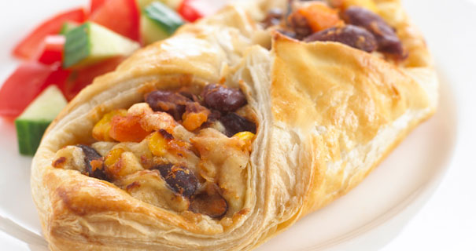
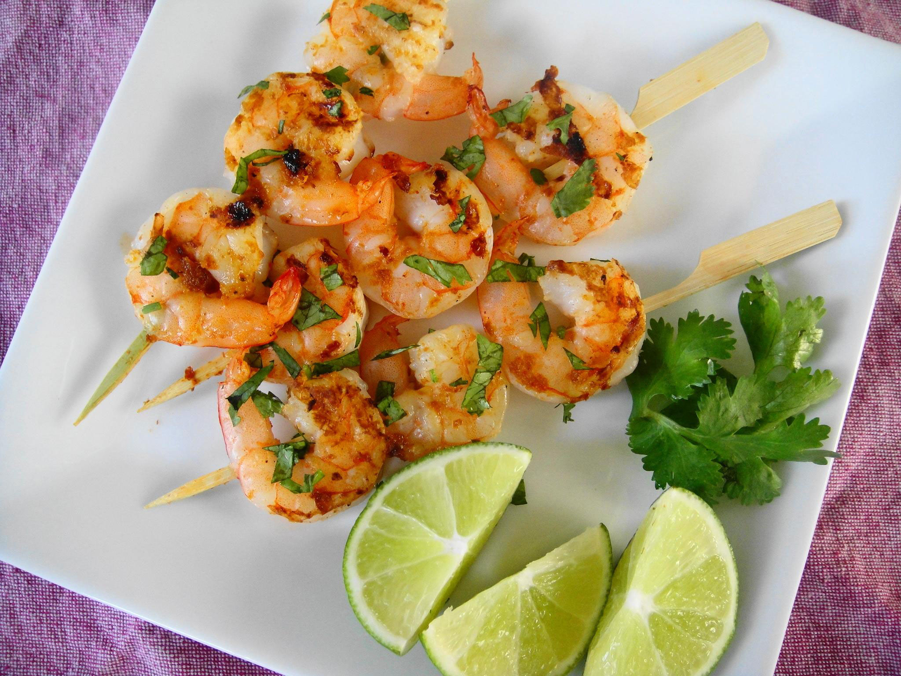

Summer Menu Items
posted by BGB,
Our chef has been busy putting together the perfect menu for the summer months. Stop by to try these appetizers and main courses while the days are still long.
Appetizers
- Black bean purses
- Spicy black beans with Thai spaices and a blend of local goat cheeses wrapped in sheets of phyllo and baked until golden. $15.95
- Sumptuous napoleons with sand crab — new item!
- Layers of light locally sourced sand crab meat, bean, fresh tomato and corn salsa, and our handmade flour tortillas. $17.95

Main courses
- Prawn sate kebabs with peanut sauce
- Skewers of local prawns marinated in lemongrass, garlic, and fish sauce then grilled to perfection. Served with spicy peanut sauce and jasmine rice. $26.95
- Jamacan style chicken chicken with fried plantains — new item!
- Tender free range chicken slow-roasted on the rotisserie, flavored with spicy and fragrant jamacan sauces and served with fried plantains and fresh bowen mango. $32.95
